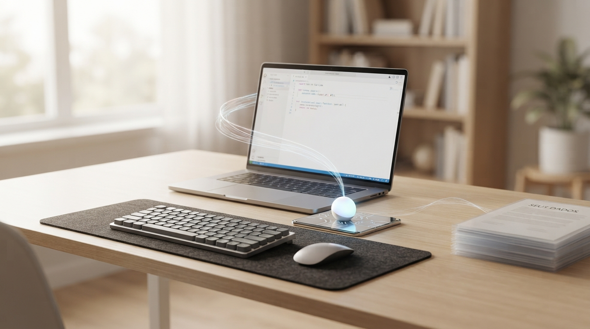
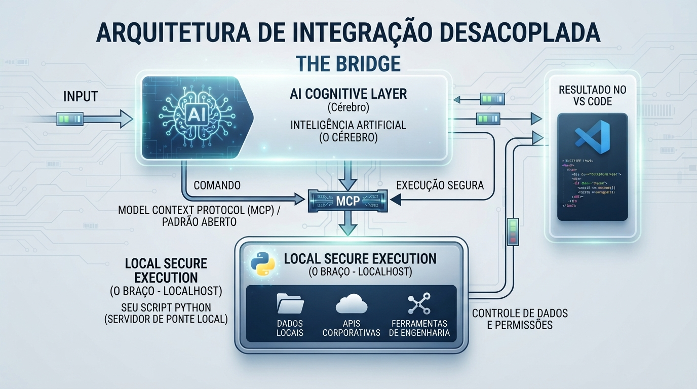

Desmistificando a Inteligência Artificial nas Corporações: Como Conectar a IA aos Sistemas Locais com Segurança e Eficiência

Tempo de leitura: 12 minutos
A conversa nas corporações sobre Inteligência Artificial quase sempre começa no lugar errado. O comitê pergunta qual modelo contratar. O jurídico pergunta para qual país o dado vai. O time de sistemas pergunta se o ERP vai aguentar. Três perguntas honestas. Um único equívoco de arquitetura: tratar a IA como se ela precisasse morar dentro do sistema de missão crítica — ou, pior, como se o sistema precisasse emigrar para a nuvem do fornecedor do modelo.
Isso não é integração. É sequestro de contexto: o arquivo, o ERP e a pasta da operação saem do perímetro da empresa e passam a viver num workspace que você não governa. O pedágio aparece depois, disfarçado de token, de cláusula contratual e de incidente de conformidade.
A saída madura é mais sóbria do que o marketing admite. O cérebro — o modelo que interpreta o pedido — pode ser alugado. O braço — o programa que lê arquivo, chama a API interna e escreve no repositório — precisa ser local. Os dados — aqueles papéis empilhados na ponta da mesa, com o rótulo que qualquer auditor entende — não saem do prédio sem permissão explícita. Essa é a ponte. Não é um produto. É um desenho.
Para quem é este artigo
Três leitores, um desenho. O comitê e o jurídico precisam ver que dá para usar IA sem emigrar o ERP. O arquiteto precisa ver onde mora a soberania. O desenvolvedor precisa ver como o braço se escreve. As seções seguintes sobem a escada nessa ordem — da decisão à bancada — sem trocar de tese no meio do caminho.
- Comitês, jurídico e CISO: o desenho da ponte, a fronteira auditável e o que não precisa ser reescrito.
- Arquitetos: cérebro, protocolo e braço como desacoplamento clássico — uma peça ao lado do legado, não no lugar dele.
- Desenvolvedores: o chão de fábrica no fim do ensaio — MCP, Python, Microsoft Graph, token versus requisição, notebook de 16 GB.
O falso dilema: nuvem total ou recusa total
Há dois discursos que se alimentam mutuamente. De um lado, a consultoria que promete “IA embarcada no legado” em noventa dias — o que, na prática, significa copiar extratos, planilhas e dumps para um workspace na nuvem e rezar para o DLP aguentar. Do outro, o veto paralisante: nada de modelo, nada de copiloto, nada de automação, porque o risco jurídico é incalculável.
Os dois erram o mesmo ponto. O risco não está no fato de existir um modelo de linguagem. Está na superfície de contato — a fronteira estreita onde a IA encontra o sistema: o que ela vê, o que ela pode executar e quem assina o comando. Uma empresa que já opera ERP, SPED, folha e PDV não precisa reescrever o núcleo para ganhar um assistente. Precisa de uma camada que traduza intenção em ação sob contrato de permissão — o mesmo princípio de menor privilégio que qualquer arquiteto sério aplica a um usuário humano: cada um só faz o estritamente necessário.
Quem acompanhou a série Horizonte do Essencial já viu o argumento em outra roupagem: soberania local não é nostalgia. É hierarquia. Primeiro a operação respira no localhost. Depois a nuvem entra como extensão. Com IA, a hierarquia é idêntica. O modelo sugere. A execução acontece no braço que você controla.
The Bridge: cérebro, protocolo e braço
O desenho que desfaz o mito cabe em três caixas. Não é um framework novo. É desacoplamento clássico com um protocolo aberto no meio.

A camada cognitiva — o cérebro — é onde mora o modelo. Pode ser um serviço comercial, um modelo hospedado na sua VPC ou um SLM no próprio desktop. A função dela é interpretar o pedido, planejar os passos e devolver um comando estruturado. Ela não precisa do banco inteiro. Precisa de um contrato: quais ferramentas existem, quais argumentos aceitam, o que é proibido.
O braço — execução segura no localhost — é o seu script, o seu pequeno servidor de ponte, o processo que já tem credencial de rede interna, pasta montada e certificado da API corporativa. É Python, Java, Rust: a linguagem importa menos do que o fato de ele viver aí, no perímetro onde o dado já está. Ele lê “seus dados”. Ele chama a API do legado. Ele aciona a ferramenta de engenharia. Ele devolve o resultado para o editor — o IDE onde o humano ainda assina com os olhos.
O meio é o Model Context Protocol (MCP): um padrão aberto para a IA descobrir ferramentas e invocá-las sem que cada fornecedor invente o seu conector proprietário. Comando de um lado. Execução segura do outro. Controle de dados e de permissões no caminho. Quem já integrou sistemas nos anos 2000 reconhece o gesto: não é magia, é contrato de interface. A novidade é que o consumidor da interface agora é um modelo, não um formulário Swing.
O cérebro pode ser alugado.
O braço precisa ser seu.
Os dados não saem da mesa.Segurança é fronteira, não discurso
Empilhar NDA, DLP e um slide de “IA responsável” não substitui fronteira. A fronteira correta é simples de auditar:
- O modelo não recebe o dump. Recebe o mínimo necessário para o passo — um trecho, um schema, um identificador — ou nem isso, se a ferramenta local já souber onde buscar.
- Toda ação passa por ferramenta nomeada. Não existe “a IA acessou o servidor”. Existe “a ferramenta
consultar_pedidorodou com o perfil X”. Isso vira log. Log vira trilha. Trilha vira resposta para a LGPD. - Permissão é do braço, não do prompt. O processo local usa a identidade de serviço que a empresa já governa. Se o modelo pedir para apagar a base, a ferramenta recusa. O recusar mora no código, não na educação do chatbot.
- O resultado volta para o humano. O editor — VS Code, IntelliJ, o IDE que o time já usa — é a sala de inspeção. Diff visível. Commit com autor. Nada de “o agente fez e ninguém sabe onde”.
Isso é o oposto do atalho que o mercado vende: colar a chave da API do ERP no painel do fornecedor de modelo e chamar de transformação digital. A chave no painel alheio é a fachada bonita do condomínio cujo vigia não vê a porta dos fundos — o mesmo tipo de falha invisível que já discutimos em erros de arquitetura que ninguém conta.
Eficiência: não reescreva o legado para parecer moderno
A conta que fecha nas PMEs e nas operações brasileiras não é a da reescrita. É a da ponte. O PDV em JavaFX, o ERP em Delphi, a planilha que ainda é a verdade operacional de um centro de distribuição: nenhum deles precisa virar “plataforma de agentes” para a empresa ganhar um copiloto útil.
Um sidecar — o carro-lateral da engenharia: uma peça que anda ao lado de um processo estável sem substituí-lo — resume, consulta, gera rascunho, dispara um relatório. O núcleo continua ACID, local, auditável. A IA costura contexto por cima, no hardware que você já tem, como na tese da IA costurada: algoritmo e fronteira vencem a corrida só por silício alheio.
Eficiência aqui não é “mais tokens por minuto”. É menos vazamento, menos projeto-monstro, menos fatura de nuvem para fazer o que um processo no localhost já fazia se alguém tivesse desenhado o contrato. O desenvolvedor que sobra nesse desenho não é o digitador de sintaxe. É o engenheiro da fronteira — o mesmo deslocamento de ofício que a série Do RPA ao Silício começa a narrar nos dias seguintes a este ensaio.
O que fazer na segunda-feira
Não comece pelo modelo. Comece pelo inventário de gestos: quais pastas, quais APIs, quais comandos um humano sênior já executa com responsabilidade. Transforme cada gesto em ferramenta pequena, com entrada validada e saída previsível. Coloque o servidor de ponte no mesmo perímetro dos dados. Só então conecte a camada cognitiva via MCP. Se o jurídico pedir um diagrama, mostre as três caixas. Se o CISO pedir um controle, mostre o recusar no braço. Se o CFO pedir ROI, mostre o legado que não foi reescrito.
Até aqui, a decisão estratégica. Toda estratégia só vira realidade quando alguém escreve o braço. O mesmo desenho das três caixas — cérebro, protocolo, execução local — desce agora para a escala da bancada: o notebook, a suíte que a empresa já paga, o script que você controla.
Cérebro (modelo no editor)
│
│ MCP — a tomada padrão
v
Braço (Python no localhost)
│
│ porta oficial (Graph, API, pasta)
v
Sistemas da empresa — dados que não emigraramA ponte no chão de fábrica (MCP, Python e Microsoft 365)
O caso concreto é o mais comum da bancada brasileira em 2026: o desenvolvedor já tem Microsoft 365 na máquina — porque a empresa paga a suíte —, já tem Python liberado no ambiente, programa em Quarkus e Angular 16, usa H2 no notebook e aponta para um PostgreSQL remoto, e quer que o assistente do VS Code consulte o que a assinatura corporativa já autoriza. A pergunta que chega disfarçada de leigo é a mesma do comitê, só que em outra oitava: isso existe, é legal, quem cobra, e a máquina de 16 GB aguenta?
O MCP não é um produto da Microsoft
O Model Context Protocol foi publicado pela Anthropic como padrão aberto. A analogia útil não é “mais uma API da nuvem”. É o USB: o mouse não precisa falar a língua de cada placa-mãe; precisa da tomada padrão. Antes do MCP, cada conexão entre modelo e sistema — pasta local, ERP, Graph, banco — nascia como integração artesanal. O protocolo unifica a gramática: o editor declara ferramentas; o servidor local as executa.
A Microsoft entra em outro andar. Ela não “roda o MCP” por você. Ela continua dona da porta de dados da suíte: o Microsoft Graph, autenticado com OAuth 2.0 no diretório da empresa (Entra ID). O script Python é o garçom. O Graph é a cozinha. O VS Code é o salão. Essa divisão é o antídoto ao sequestro de contexto: o modelo pede o prato; a cozinha continua no prédio; o garçom só leva o que o cardápio — as ferramentas que você nomeou — permite. Confundir os três — como a gestão costuma fazer quando diz “usem o 365 com Python” — é misturar licença de escritório com engenharia de ponte. Não é ilegal. É só um desenho que o slide corporativo não mostra.
Quatro caixas, um contrato
+-------------------------------------------------------+
| VS Code + assistente de IA |
| Quarkus / Angular 16 — o humano inspeciona o diff |
+-------------------------------------------------------+
|
[ MCP — padrão aberto, gramática da ferramenta ]
|
v
+-------------------------------------------------------+
| Script Python (servidor MCP no localhost) |
| Traduz pedido da IA em chamada nomeada |
| Você decide o que existe: e-mail, arquivo, tenant |
+-------------------------------------------------------+
|
[ OAuth 2.0 / Microsoft Graph ]
|
v
+-------------------------------------------------------+
| Microsoft 365 da instituição |
| Licença, throttling, DLP e Entra ID já existentes |
+-------------------------------------------------------+O Python não inventa um atalho para o tenant. Ele intermedia, na sua máquina, o que a conta corporativa já tem direito de ver — o braço local da tese, agora com nome de processo. Se amanhã o time trocar Copilot por outro modelo no editor, o servidor MCP continua o mesmo: a língua da ponte não é a marca do cérebro.
Quem paga o quê: token não é requisição
Aqui mora o medo financeiro — e a confusão. O MCP é carteiro. Não cobra token. O que consome token é o modelo no editor (assinatura do Copilot, da Anthropic, do que a empresa homologou). O que consome a Microsoft, quando o script pergunta ao 365, é chamada de Graph, não “palavra de chat”.
Essa chamada já nasce com cinto de segurança de API clássica:
- Rate limit / throttling. A Microsoft não deixa um loop infinito “indagar o serviço para sempre”. Estoura a cota e devolve HTTP 429 — Too Many Requests. A punição do uso diário imprudente é técnica: a porta fecha até o fluxo aliviar. Não é uma surpresa na fatura de token. É a mesma fronteira auditável do ensaio: carga máxima visível, pedágio no protocolo, não no palpite do chatbot.
- Identidade. Sem credencial OAuth válida, não há Graph. O tenant sabe quem perguntou. O script só enxerga o que aquele perfil já enxerga no Outlook, no OneDrive, no diretório. Python não burla RBAC.
- Camada da licença. Conta consumer e plano Enterprise não têm a mesma folga de API. Em Enterprise Agreement (tipicamente E3/E5), o direito de usar o Graph já está no contrato que a instituição paga. Consulta moderada de desenvolvimento cabe na franquia. Robô em loop, não.
- APIs metered. O pacote padrão do 365 cobre o cotidiano. Processamento pesado, certos relatórios de conformidade ou serviços Azure atrelados ao tenant podem sair do “já incluso” e ir para medidor. Isso não é o MCP. É volume de nuvem que a TI já deveria governar.
Num banco, numa autarquia, numa cooperativa com dezenas de milhares de assentos: a Microsoft não cobra “por clique da IA no VS Code”. Cobra o contrato. O risco operacional não é a fatura escondida do MCP — que não existe. É governança: aplicativo registrado no Entra ID, política de DLP se o tráfego de dado sair do padrão, e o velho fantasma do Shadow IT se a ponte nunca foi homologada. Segurança da informação barra por política; Graph barra por 429. Nenhuma das duas é “o Python virou pirataria”.
A máquina de 16 GB: o guloso não é a ponte
Quarkus, Angular 16, H2 local, PostgreSQL remoto, VS Code, assistente, um processo Python de MCP. O raio-X é honesto. O MCP e o script são leves: acordam sob demanda, fazem a requisição e calam a boca. O peso está no resto da bancada que o desenvolvedor já carrega.
- Angular 16 / Node.
ng serve, TypeScript e hot-reload comem RAM e CPU, sobretudo em módulo grande. - Java. A JVM clássica é gulosa. Quarkus existe precisamente para não ser Spring Boot dos anos 2010: menos RSS, boot em fração de segundo, folga real num notebook de 16 GB.
- VS Code (Electron) + extensão de IA. O editor e o índice de contexto puxam memória em segundo plano. Isso existiria com ou sem MCP.
Dezesseis gigabytes é o mínimo aceitável dessa pilha, não o luxo. Trinta e dois é o sweet spot se o monólito Angular inchar e o H2 conviver com Docker. A ponte Python não é o item que derruba a Dell. Atribuir travamento ao MCP é diagnosticar o garçom pela conta da cozinha.
Licença, criatividade e o slide que mistura tudo
Quarkus, Angular, PostgreSQL, H2 e Python são open source de licença permissiva. O SDK de MCP em Python existe para isso: construir ferramenta local, não para furar o Graph. “Eles falaram que temos 365 e temos que usar Python” não é uma arquitetura — é um balaio. O desenvolvedor que monta a ponte está usando a suíte que a empresa já paga e a linguagem que a empresa já liberou, dentro das permissões da própria conta. Isso não é crime. É o ofício.
O único “cuidado” que não cabe no compilador é o da política interna: dado que você já pode ver; ferramenta que a TI ainda não registrou. Quem trabalha em instituição regulada pergunta ao time de segurança antes de promover o sidecar de experimento a canal de produção. Quem trata essa pergunta como acusação de ilegalidade está discutindo o slide, não o contrato.
Resumo da bancada: o cérebro no editor gasta token da ferramenta de IA. O braço Python gasta chamada Graph sob OAuth e throttling. O legado Quarkus continua ACID no H2 e no Postgres. Nenhuma dessas contas se paga “indagando o Microsoft 365 sem limite”. A engenharia já tinha esses cintos. O MCP só tornou o garçom padronizado — e a tese da ponte, código.
Fecho: um desenho, dois andares
O comitê pedia um modelo. O jurídico pedia um país. O desenvolvedor pedia um script. A resposta é a mesma caixa vista de alturas diferentes. A inteligência artificial deixa de ser mistério quando deixa de ser duto. Vira ponte — e ponte boa tem dono dos dois lados, carga máxima e pedágio visível. Não um salto de fé para o data center de um terceiro.
Dicionário de Termos Técnicos e Negócios (para leigos)
Conceitos fundamentais e jargões abordados no artigo explicados de forma simples e direta:
- Arquitetura desacoplada (The Bridge)
- Desenho em que pensar e executar ficam em processos separados. A IA interpreta o pedido; um programa local, sob as regras da empresa, é quem lê arquivos, chama sistemas e devolve o resultado. Se um lado falha ou é desligado, o outro não leva o núcleo do negócio junto.
- Camada cognitiva (o cérebro)
- O modelo de linguagem ou o serviço de IA que entende o pedido em português e monta um plano. Não guarda o ERP. Não deveria ter a senha do banco. Só conhece as ferramentas que a empresa decidiu expor.
- Execução local (o braço / localhost)
- Programa que roda na máquina ou na rede da empresa, onde os arquivos e as APIs internas já estão. É o “servidor de ponte”: recebe um comando autorizado, executa com as credenciais corporativas e registra o que fez.
- LGPD e soberania de dados
- A Lei Geral de Proteção de Dados exige saber quem acessou o quê e por quê. Soberania, neste ensaio, significa que o dado operacional permanece no perímetro da empresa; a IA visita o mínimo necessário, sob trilha, em vez de receber uma cópia permanente na nuvem do fornecedor.
- Entra ID (Azure AD)
- O diretório de identidades da Microsoft na empresa. É nele que um script ou aplicativo precisa ser reconhecido (registro, permissão, administrador) antes de falar com o Microsoft 365 em nome de um usuário.
- HTTP 429 (Too Many Requests)
- Resposta padrão da internet quando alguém bate na porta rápido demais. No Graph, é o corte técnico contra loop e abuso: o serviço para de atender por um tempo, sem necessariamente gerar uma fatura extra de “token de chat”.
- MCP (Model Context Protocol)
- Padrão aberto, publicado pela Anthropic, para a IA descobrir e acionar ferramentas de forma uniforme — como um USB entre o cérebro e o braço. Não é um produto da Microsoft e não cobra por token: é a gramática da ponte.
- Microsoft Graph
- A API oficial pela qual programas autorizados leem e escrevem dados da suíte Microsoft 365 (e-mail, arquivos, calendário, diretório). Continua sendo a porta, com ou sem MCP no meio. Quem autentica é o OAuth; quem limita é o throttling.
- OAuth 2.0
- Protocolo de autorização: o script não “adivinha a senha”. Recebe um token de acesso, limitado no tempo e no escopo, vinculado à conta ou ao aplicativo registrado. Sem isso, o Graph não abre.
- Princípio do menor privilégio
- Regra de segurança: cada ferramenta só pode fazer o estritamente necessário. Consultar um pedido não implica poder apagar o cadastro. A recusa mora no código da ponte, não na “educação” do chatbot.
- Sequestro de contexto
- Quando o material de trabalho da empresa — arquivos, ERP, pastas — é copiado para o ambiente de um fornecedor de IA a fim de “integrar”. Não é ponte: é mudar o dado de dono. O pedágio vem depois, em token, cláusula e incidente.
- Superfície de contato
- A fronteira estreita entre o modelo e o sistema: o que a IA pode ver, o que pode executar e quem assina. Quanto mais estreita e nomeada, mais fácil de auditar.
- Shadow IT
- Ferramenta ou automação que o colaborador usa sem homologação da TI. Tecnicamente a ponte MCP pode ser correta e legal; corporativamente, uma instituição regulada pode exigir registro no Entra ID e aval de segurança antes de virar canal oficial.
- Sidecar (carro-lateral)
- Peça que anda ao lado de um sistema estável sem substituí-lo. A IA resume, consulta e rascunha; o PDV, o ERP e o banco continuam sendo a fonte da verdade. Modernizar sem demolir o que já fatura.
- Throttling (limitação de taxa)
- Régua da API: quantas requisições por minuto ou por dia aquele tenant e aquela licença podem fazer. Protege a infraestrutura da Microsoft e da empresa. Não é cobrança por token de IA; é cota de chamadas.